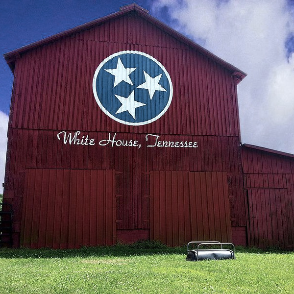
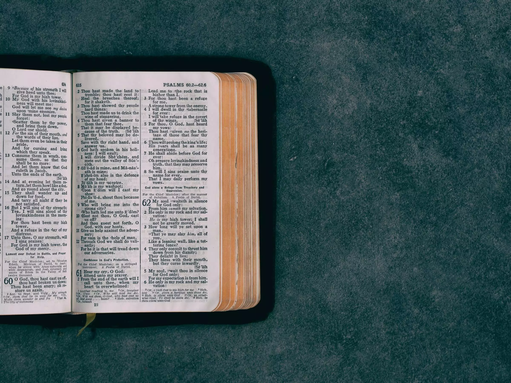
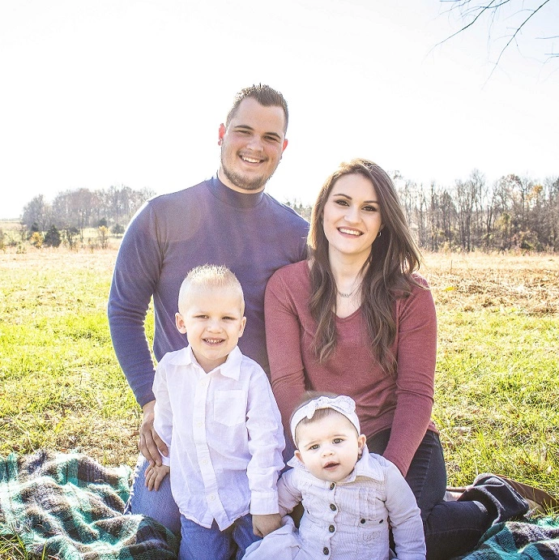

Welcome to
New Beginnings

At New Beginnings Baptist Church (NBBC), we are a family—a family that welcomes you with open arms!

Set in rural White House, Tennessee, our rustic log-cabin church building provides us an atmosphere of "southern-living" charm, but the real charm resides amongst our people, as we strive together to become everything God wants us to be. No matter what stage of life you are in, there is a place for you at NBBC.
Join us to be encouraged, challenged, and strengthened spiritually with a supportive Christian family by your side.
A Free Gift
Statement of Faith

- OF THE SCRIPTURES
We believe that the Bible is the Word of God, divinely inspired, and supernaturally given from God to men. We believe that this plenary, verbal inspiration of God’s Word, is the only complete and final revelation of the will of God to man. We believe that it is the supreme, infallible authority in all matters of faith and practice. We believe that the Authorized King James Version is the preserved Word of God in the English language. It is the final authority, and the only version that will be used for teaching or preaching.
- OF THE TRUE GOD
We believe that there is one, and only one, living God, an infinite intelligent Spirit, the maker and supreme ruler of heaven and earth; inexpressibly glorious in holiness and worthy of all possible honor, confidence and love; that in the unity of the Godhead there are three persons, the Father, the Son, and the Holy Ghost, equal in every divine perfection, and executing distinct but harmonious offices in the great work of redemption.
- OF THE DEVIL, OR SATAN
We believe that Satan was once holy, and enjoyed heavenly honors; but through pride and ambition to be as the Almighty, fell and drew after him a host of angels; that he is now the malignant prince of the power of the air, and the unholy god of this world. We hold him to be man’s great tempter, the enemy of God and His Christ, the accuser of the brethren, and the author of all false religions, the chief power behind this world’s present apostasy; the lord of the Antichrist, and the author of all the power of darkness – destined, however, to final defeat at the hands of God’s own Son, and to the judgment of an eternal justice in the Lake of Fire, a place prepared for him and his angels.
- OF CREATION
We believe in the Genesis account of creation, and that it is to be accepted literally, and not allegorically or figuratively; that man was created directly in God’s image and after His own likeness; that man’s creation was not a matter of evolution or evolutionary change of species, or development through interminable periods of time from lower to higher forms; that all animal and plant life was made directly by God, who commanded that they bring forth “after their kind.”
- OF THE FALL OF MAN
We believe that man was created in innocence under the law of His Maker, and that by voluntary transgression fell from his sinless state, consequently passing his sin unto all mankind, not by constraint, but by choice; and therefore under just condemnation without defense or excuse. We believe that those who refuse to receive Christ, as their personal Lord and Savior will be tormented forever, separated from God in the Lake of Fire.
- OF THE VIRGIN BIRTH
We believe that Jesus Christ was begotten of the Holy Ghost, in a miraculous manner; born of Mary, a virgin, as no other man was ever born, or can ever be born of women, and that He is both the Son of God, and God, the Son.
- OF THE ATONEMENT OF SIN
We believe that the salvation of sinners is wholly of grace; through the mediatorial offices of the Son of God, who by appointment of the Father, freely took upon Him our nature, yet without sin, honored the divine law by His personal obedience, and by His death made a full and vicarious atonement for our sins; that His atonement consisted not in setting us an example by His death as martyr, but was the voluntary substitution of Himself in sinner’s place, the Just dying for the unjust, Christ the Lord, bearing our sins in His own body on the tree; that, having risen from the dead, He is now enthroned in heaven and uniting in His wonderful person the tenderest sympathies with divine perfection, He is every way qualified to be a suitable, a compassionate and an all-sufficient Savior.
- OF GRACE IN THE NEW CREATION
We believe that in order to be saved, sinners must be born again; that the new birth is a new creation in Christ Jesus; that it is instantaneous and not a process; that in the new birth the one dead in trespasses and sins is made a partaker of the divine nature and receives eternal life, the free gift of God; that the new creation is brought about in a manner above our comprehension, not by culture, not by character, not by the will of man but wholly and solely by the power of the Holy Spirit in connection with the divine truth, so as to secure our voluntary obedience to the gospel; that its proper evidence appears in the holy fruits of repentance, faith and newness of life.
- OF THE FREENESS OF SALVATION
We believe in God’s grace; that the blessings of salvation are made free to all by the gospel; that it is the immediate duty of all to accept them by a cordial, penitent and an obedient faith; and nothing prevents the salvation of the greatest sinner on earth but his own inherent depravity and voluntary rejection of the gospel; which rejection involves him in an aggravated condemnation. We believe that our election is based on God’s omniscient foreknowledge of what we will do with His Son, Jesus Christ, rather than His will; for God is not willing that any should perish, but that all should come to repentance; who will have all men to be saved, and to come unto the knowledge of the truth.
- OF JUSTIFICATION
We believe that the great gospel blessing which Jesus Christ secures to such as believe in Him is justification; that justification includes the pardon of sin, and the gift of eternal life on principles of righteousness; that it is bestowed not in consideration of any works of righteousness; which we have done; but solely through faith in the Redeemer’s blood, His righteousness is imputed unto us.
- OF THE CHURCH
We believe that the local Baptist church is an independent and autonomous, and must be free from any ecclesiastical or political authority. The local church is a company of professing, born-again believers in Jesus Christ, immersed on a credible confession of faith, and associated for worship, work and fellowship. We believe that we are committed for perpetual observance to the ordinances of baptism and the Lord’s Supper, and that God has laid upon these churches the task of proclaiming to a lost world the acceptance of Jesus Christ as Lord and Savior, and the enthroning of Him as Lord and Master.
- OF APOSTLESHIP AND SPIRITUAL GIFTS
We believe that the apostolic office ceased with the death of the Apostles. Therefore we also believe that all the miracles performed by them, the “signs of an apostle,” have also ceased. We believe that after the completion of the New Testament, a totally perfect, complete, Word of God now existed, and that the signs, such as tongues and prophesying, were done away with. We believe that if these gifts were important and necessary for us today, that Paul, the Apostle to the Gentiles, would have talked about spiritual gifts with more than just the Corinthian church. Paul the Apostle wrote thirteen books of the Bible, yet he only discussed spiritual gifts with one; the church which he called carnal.
- OF ETERNAL SECURITY
We believe in the eternal security of all blood-bought individuals or believers and that such inheritance is incorruptible, and undefiled, and that each believer is kept by the power of God and nothing can separate us from Him, ourselves included. We believe that believers can lose the joy of fellowship with God, can grieve God and can quench the Spirit of God in them, but not lose their salvation. Even if we turn, yet He abides faithful.
- OF THE SECOND COMING
We believe in a pre-Tribulational rapture of the church, all those who are born-again by accepting Jesus Christ as their personal Lord and Savior. We believe that this will take place just prior to God pouring out His wrath upon this world for seven years in judgment. We believe that in heaven we will stand before the Judgment Seat of Christ during this time, and will receive the things done in our bodies, our inheritance, whether they are good or bad. We believe in the bodily and visible return of Jesus Christ with His saints at the close of the Tribulation period to rule and reign for a thousand years, a millennium, on earth. We believe that following the millennial reign of Christ on Earth; unbelievers will be judged by God at the Great White Throne Judgment according to their works, not for salvation, but for their proper and rightful places in the Lake of Fire.
- OF HEAVEN AND HELL
We believe in Heaven, the eternal home of the redeemed. We believe Heaven to be the place where the saved will live forever in the eternal bliss and blessings of God. We believe in Hell, the Christ-less eternity for the lost, where there will be burning and torment for those without salvation who have refused to receive the gospel and Jesus Christ as Lord. We believe that Hell, unbelievers, Satan and all the fallen angels will be cast into the Lake of Fire to be tormented day and night forever and ever.
Meet Pastor Luke Iannello
and his family
Pastor Luke Iannello grew up under the powerful teaching and preaching of God’s word at New Beginnings Baptist Church. Over the years, God worked through his life, convicting him to do more for the cause of Christ. Through this, he eventually became the Chaplain of the Robertson County Jail, as well as the choir director of the church. Pastor Luke developed a passion for sharing the gospel and counseling those in need. With this passion and a love for the ministry at New Beginnings, Pastor Luke became assistant pastor in 2012 and then, full-time pastor in 2018.
Focused on “Introducing new life to the heart of the common man,” Pastor Luke brings messages of hope to the hopeless. As a champion of the King James Bible, he preaches messages saturated with scripture. New Beginnings is blessed to have a pastor who is unashamed to proclaim the truths found in the word of God. While serving at New Beginnings, Pastor Luke met his wife Katlin. They are now happily married and have two precious children. Pastor Luke and his wife Katlin joyfully serve in the ministry at New Beginnings, showing the love of God through their lives.

Pastor Luke, his wife Katlin, and their children